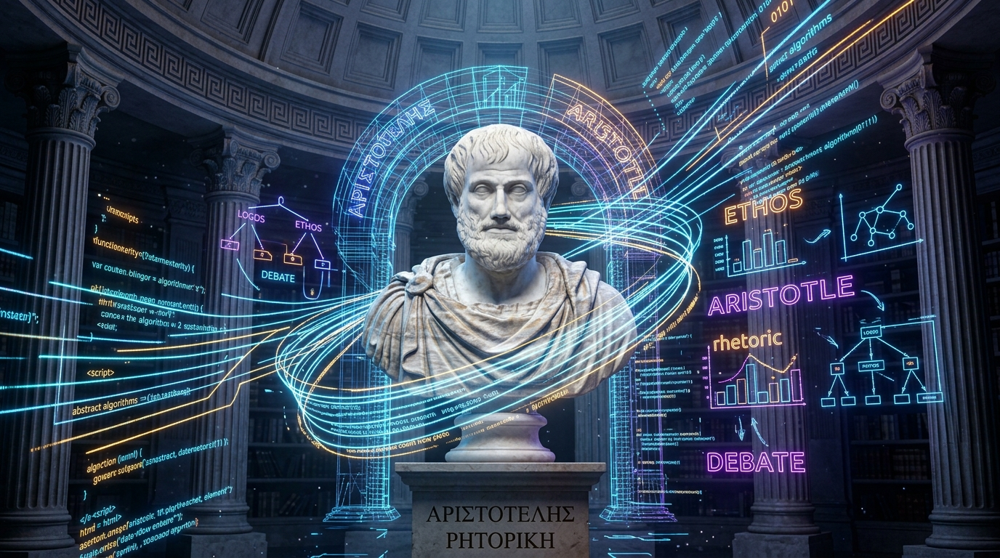

August 11, 2026
The Art of Persuasion: Classical Rhetoric in the Age of Digital Dialogue

For thousands of years, the rules of persuasion were dictated by classical philosophy. In ancient Greece, Aristotle codified the foundations of rhetoric, breaking it down into three core elements: Ethos (authority and credibility), Pathos (emotional connection), and Logos (logical argument). In the modern world, as physical soapboxes are replaced by social media algorithms, short-form videos, and online chat comment sections, a fascinating question arises: How do these ancient pillars of persuasion translate to our modern digital dialogue?
Ethos in the Age of the Influencer
First, consider Ethos in the digital era. Historically, credibility was built through institutional standing, credentials, or physical presence. Today, digital ethos is often measured by follower count, verified badges, and content consistency. However, this has also democratized authority. An independent blogger or a self-taught researcher can build massive ethos by presenting transparent, well-referenced arguments directly to the public, bypassing traditional institutional gatekeepers. Yet, the challenge remains for readers to distinguish true expertise from mere digital influence.
Furthermore, digital ethos is highly fragile. In the classical era, a speaker's reputation was built over a lifetime of public service and face-to-face interactions. In the digital age, a single misconstrued tweet or a short video clip taken out of context can destroy decades of credibility in a matter of hours. This has led to a culture of hyper-vigilance, where online speakers must constantly manage their digital footprint. To build a robust and ethical digital ethos, modern creators must prioritize radical transparency, citing their sources clearly and admitting errors promptly when they occur.
Pathos, Algorithms, and Outrage Culture
Second, Pathos has been amplified by the architecture of social media. Emotional connection is the primary driver of engagement online. Algorithms are optimized to surface content that triggers strong reactions—frequently outrage, surprise, or joy. While pathos in a classical assembly was a tool used to inspire collective empathy and shared purpose, online pathos often drives polarization. The challenge for modern digital orators is to connect emotionally without descending into hostility, utilizing empathy to build bridges rather than walls.
The commodification of pathos by digital platforms poses a significant threat to constructive debate. When emotional responses are gamified through likes, shares, and retweets, speakers are incentivized to exaggerate their claims and appeal to the worst instincts of their audience. This creates echo chambers where nuanced discussions are drowned out by emotional tribalism. To reclaim the ethical use of pathos, digital communicators must learn to appeal to constructive emotions—such as hope, shared humanity, and collective curiosity—rather than fear and division.
Logos in the Snippet Culture
Finally, Logos—the logical structure of an argument—faces the greatest challenge in the snippet culture of the internet. With character limits and short attention spans, presenting deep, nuanced, multi-layered logical arguments is difficult. Logos is often reduced to catchphrases, memes, or cherry-picked statistics. To counter this, digital writers are developing new formats, such as long-form essays, sub-stack articles, and interactive debate forums, where logic and evidence can be explored in detail.
The erosion of logos has led to a decline in public trust. When complex societal issues are reduced to 280-character soundbites, the public is left with a shallow understanding of the challenges we face. However, there is a growing counter-movement. The rise of long-form podcasts, video essays, and dedicated newsletters indicates a strong public hunger for deep logical analysis. As digital citizens, we must actively support these long-form spaces, dedicating the time necessary to digest complex arguments and resist the allure of superficial consensus.
Conclusion: A New Rhetoric for a Digital Square
Ultimately, the art of persuasion remains unchanged in its core human elements. Whether we are speaking on a wooden box in Hyde Park or writing in a web forum, the balance of credibility, emotion, and logic determines our impact. By understanding and applying classical rhetoric ethically, we can elevate our online discussions, turning modern digital squares into places of genuine understanding and mutual respect.
As we navigate this transition, we must remember that rhetoric is not merely a tool for winning arguments; it is a framework for discovering shared truths. By combining the intellectual rigor of logos, the empathy of pathos, and the integrity of ethos, we can build a digital public square that honors the rich legacy of open discourse and historical oratory.
← Back to Home